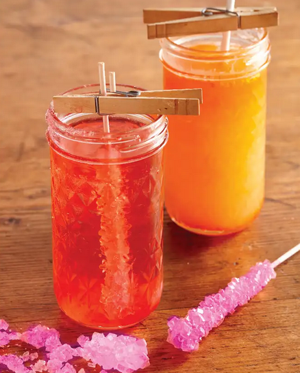

Kalaxian Crystals

Note from Rick
Dear Morty's Teacher, I know your 'honorable' professionloathes sugar as it makes it more difficult for you to fill young minds with your useless dribble, but im here to tell you to...suck it! And by 'it', I obviously mean my delicious Kalaxian Crystals! Haha! See what I did there?
Ingredients
- 1 cup water
- Skewers
- 3 cups sugar plus 1 tablespoon for rolling skewers
- Clothespins
- Mason jar
- 3 to 4 drops of pink food coloring
- 1/2 teaspoon food grade essential oil
- Coffee Filter
- Rubber Band
Put it all together
- Wet skewer with water, then roll in granulated sugar, leaving at least 2 inches bare to use as a handle. Set aside to dry completely. This will form a place for the crystals to start growing.
- Fasten a clothespin horizontally across the bare end of the skewer. Rest skewer in the jar such that the clothespin spans the top. The skewer shouldn't touch the bottom of the jar.
- In a medium saucepan on medium high heat, bring water to a boil. Add 1/2 cup of sugar at a time, stirring until completely dissolved before adding the next 1/2 cup. Once sugar no longer dissolves, the mixture is ready. Add in food coloring until desired shared is reached, and stir in the essential oil as well.
- Carefully pour hot sugar solution into jar until skewer is covered. Top with a coffee filter and fasten with a rubber band. Allow the mixture to cool before moving to a cool dry place out of direct sunlight.
- Crystals take about 7 days to fully form.
- Once grown, transfer the crystal to an empty glass and allow it to drip dry. Enjoy responsibly!